LECTURE 6
Camera Calibration
From pixels to the real world: camera models, lens distortion, calibration & perspective transforms
Pinhole, wide-angle, fisheye, stereo & Raspberry Pi cameras · hands-on with OpenCV · Lab 6
Dr. Muhammad Kazim
Department of Intelligent Systems
University of Lahore
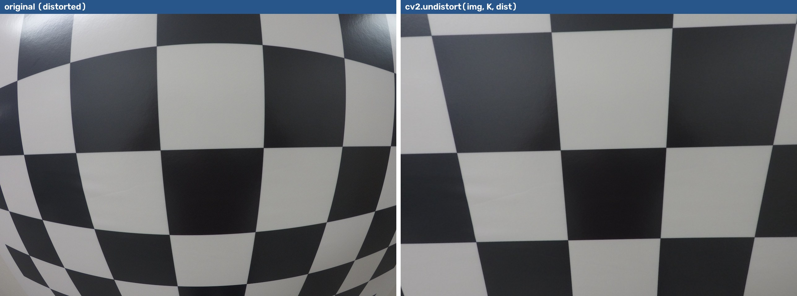
Where we are
From lane pixels to real-world measurements
Lecture 5 · you can already
- Select lane paint by colour and region
- Find edges with Canny, lines with Hough
- Draw two straight lane lines on video
…but everything is in pixels, and straight lines only.
Lecture 6 · today
- How a camera turns 3-D points into pixels (pinhole model, K, [R | t])
- Why lenses distort and the 5 numbers that fix it
- Calibrate any camera with a chessboard (Zhang's method)
- Fisheye, ChArUco, stereo & Raspberry Pi cameras
- Perspective transform → bird's-eye view → lane curvature in metres
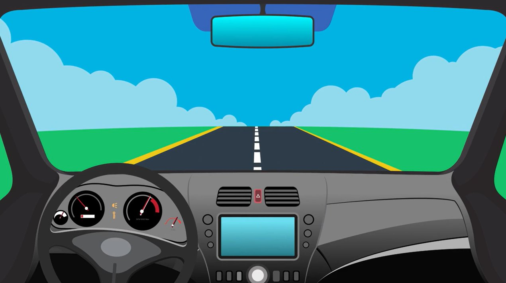
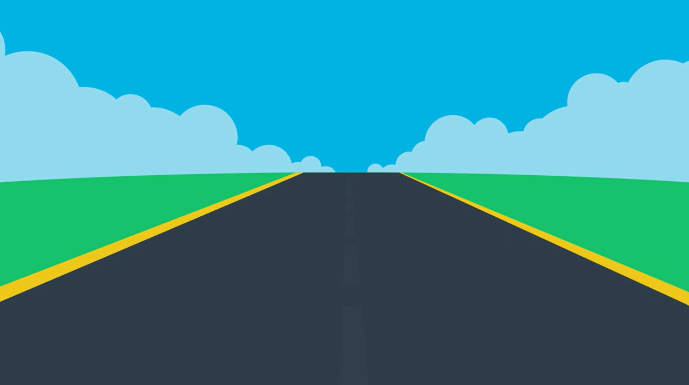
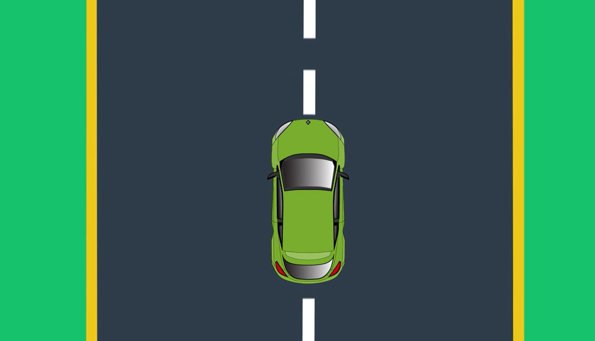
To steer, a car must measure how much its lane curves, which means looking at the road from above. That warp is only correct after we remove lens distortion (Udacity).
Learning outcomes
By the end of this lecture and Lab 6 you should be able to:
- Write the pinhole projection s·x = K [R | t] X and explain every intrinsic and extrinsic parameter.
- Describe radial and tangential distortion, the OpenCV coefficients
(k1, k2, p1, p2, k3), and when you need the fisheye or omnidirectional model instead. - Compare camera types (standard, wide-angle, fisheye, 360°, stereo, RGB-D, rolling vs global shutter) and calibration targets (chessboard, circles, ChArUco).
- Calibrate a camera with OpenCV: corners → object/image points →
calibrateCamera→ reprojection error. - Undistort images and video efficiently, and judge a calibration's quality.
- Calibrate a stereo pair and rectify it; calibrate your own Raspberry Pi / USB camera.
- Apply a perspective transform to get a bird's-eye view and measure lane curvature.
Roadmap
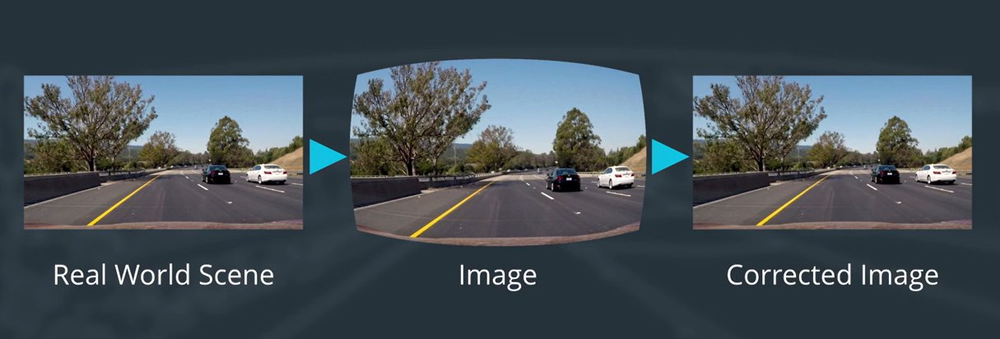
The whole lecture in one picture: real world → (lens) → distorted image → (calibration) → corrected image (Udacity).
The big picture first
Camera calibration in one minute
♟️
1 · Show a known shape
Hold a printed chessboard in front of the camera. We know exactly where every corner is on the paper.
📷
2 · See where it lands
Find the corners in the picture. Because of the lens and the viewpoint they are not where a perfect camera would put them.
🧮
3 · Solve for the numbers
Find the few numbers (focal length, image centre, lens distortion) that explain the difference. Do it once, use it forever.
Analogy: an eye doctor shows you a chart whose letters she knows, sees how you read it, and writes your prescription. The chessboard is the chart, the camera is the eye, and K + dist is the camera's prescription. Afterwards we "put the glasses on": every image is corrected, and pixels can be turned into millimetres.
Key words in plain English
| Word | Means | Everyday picture |
|---|---|---|
| Intrinsics, K | numbers inside the camera: focal length fx, fy and image centre cx, cy (in pixels) | the camera's ID card |
| Extrinsics, [R | t] | where the camera is (t) and where it looks (R) | your GPS position + which way you face |
| Distortion, dist | how much the lens bends lines near the edges: k1, k2, k3 (radial), p1, p2 (tangential) | looking through a peephole or a glass of water |
| Object points | where the board corners really are (mm, Z = 0) | the answer sheet |
| Image points | where the corners appear in the photo (pixels) | the student's answers |
| Reprojection error | distance between where the model predicts a corner and where it was found | how far a dart lands from the bullseye |
| Undistort | re-draw the image as a perfect pinhole camera would have taken it | putting the glasses on |
| Homography / perspective transform | a 3 × 3 recipe that re-draws a flat thing as seen from another angle | photographing a poster straight-on |
01
Why calibrate a camera?
Cameras do not create perfect images
Image distortion: 3-D world → imperfect 2-D image
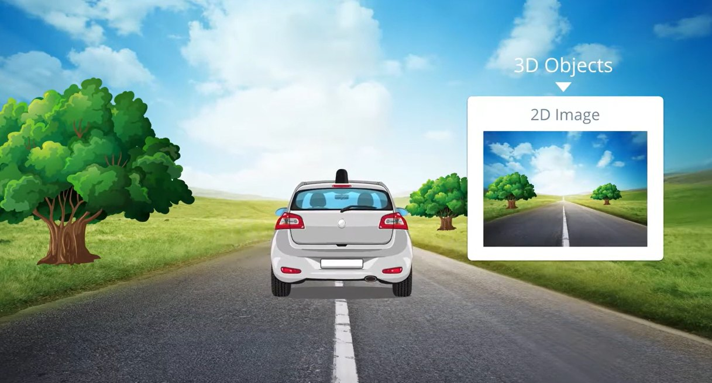
When a camera looks at 3-D objects and turns them into a 2-D image, the transformation is not perfect.
- Distortion changes the apparent shape and size of objects
- It is strongest near the edges of the image
- A distorted lane gives the wrong curvature → the wrong steering angle
So the first step of any measuring vision system is to undo the distortion.
The same road through different lenses
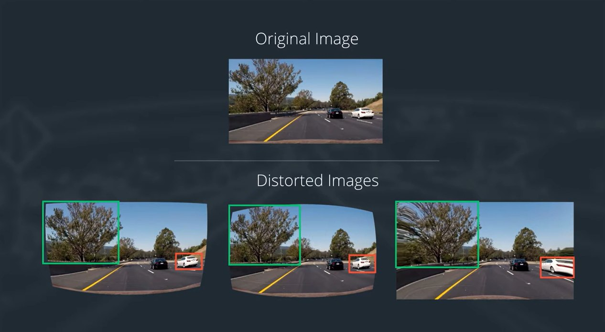
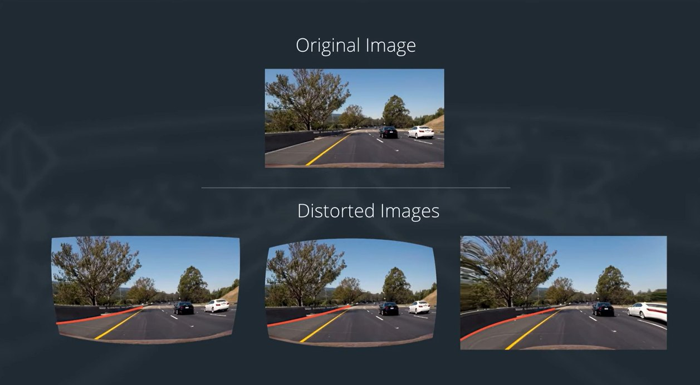
The lane edges are bent, rounded or stretched outward. Distortion changes what the shape and size of objects appear to be, and a self-driving car must place itself in the world accurately.
Is it visible on a real dash-cam? new
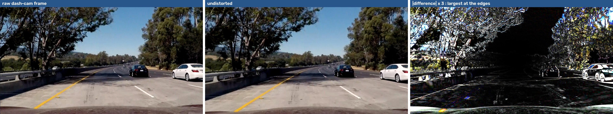
A frame from the Udacity Advanced Lane Lines camera before and after undistortion (we calibrate this camera in Lab 6D). The difference image shows the correction is largest near the image border: exactly where the lane lines and nearby cars are.
▶︎ Lab 6D in ColabQuiz: why is it important to correct for distortion?
Quiz question · select all that apply
- Distortion can change the apparent size of an object in an image.
- Distortion can change the apparent shape of an object in an image.
- Distortion can cause an object's appearance to change depending on where it is in the field of view.
- Distortion can make objects appear closer or farther away than they actually are.
What calibration gives you
Intrinsics K
Focal lengths fx, fy and principal point cx, cy, in pixels. Fixed for a given camera, lens, focus and resolution.
Distortion
dist = [k1, k2, p1, p2, k3] (or the fisheye [k1..k4]). How the lens bends rays away from the ideal pinhole.
Extrinsics [R | t]
Where the camera is relative to the world (or to the board, or to a second camera). One pose per calibration image.
| Application | Needs |
|---|---|
| Lane curvature, bird's-eye view (SDC) | K + distortion, then a perspective transform |
| Measuring object size in mm (inspection, Lab 9) | K + distortion + the distance or plane |
| Stereo depth (Lecture 10), visual SLAM, 3-D reconstruction | K, distortion and the relative pose of the cameras |
AR overlays, robot pick-and-place, ArUco pose (solvePnP) | K + distortion → pose of objects |
| Multi-sensor fusion (camera + LiDAR / IMU) | intrinsics + extrinsic calibration between sensors |
02
The pinhole camera model
How 3-D points become pixels
The pinhole camera
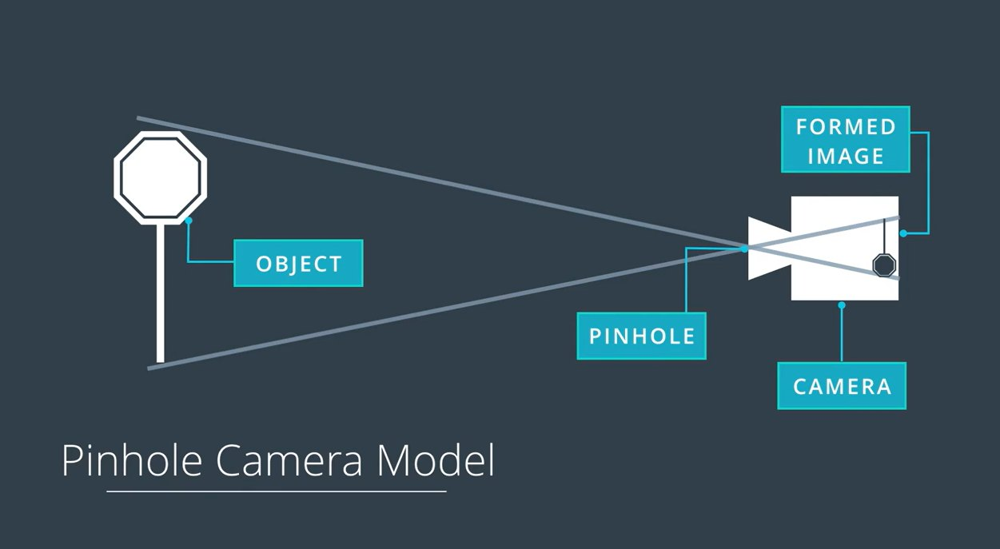
- Light reflected from an object passes through a tiny hole and forms an image on the back plane (film / sensor).
- The image is upside-down and mirrored: rays from the top of the object continue through the pinhole to the bottom of the image.
- The pinhole camera is the earliest means of projecting images: the camera obscura was described in China around 2,500 years ago.
A pinhole has no lens, so it has no distortion; it just lets in very little light.
The camera and the human eye
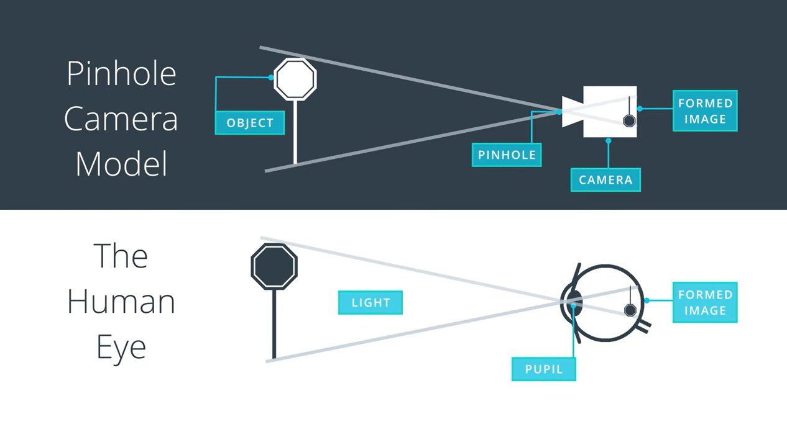
The eye works the same way: the pupil is the pinhole and the retina is the image plane, and the image on it is upside-down too. The brain flips it.
Quiz
What is the fundamental difference between images formed with a pinhole camera and those formed using lenses?
- Pinhole images are always flipped, lens images upright
- Pinhole images are black and white
- Pinhole images are free from distortion; lenses tend to introduce distortion
- They are exactly the same
From 3-D to 2-D: the camera matrix
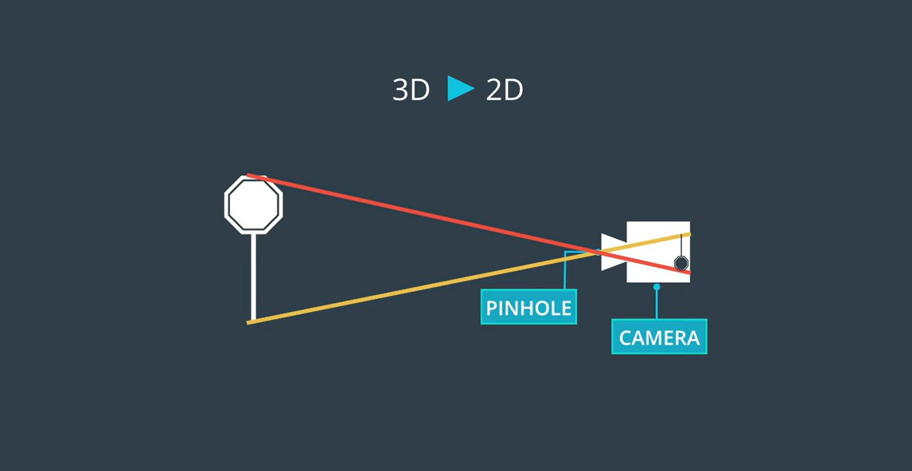
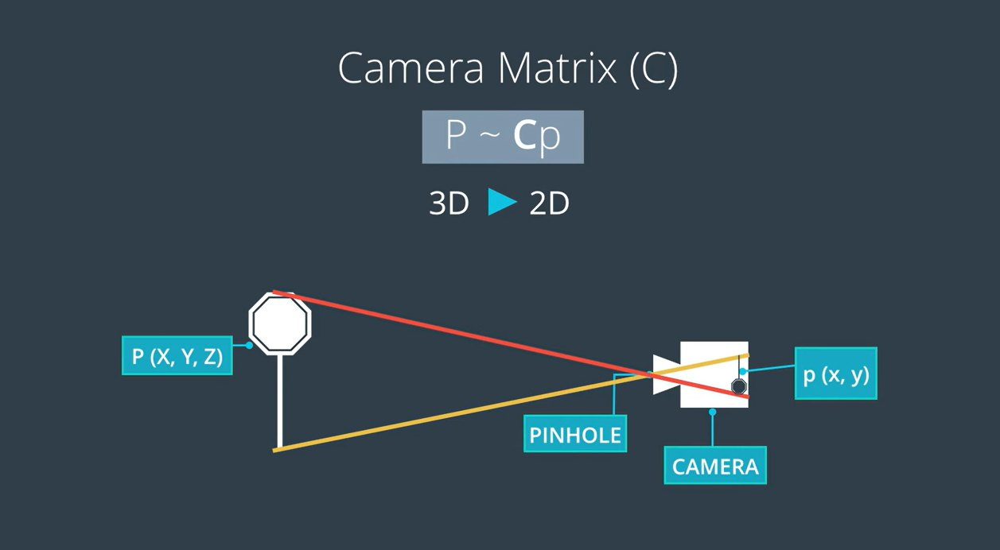
A 3-D object point P(X, Y, Z) maps to a 2-D image point p(x, y) through a camera matrix (Udacity calls it C, so p ≈ C P). Calibration is the job of measuring that matrix plus the lens distortion.
Perspective projection by similar triangles
Similar triangles give, for a camera at the origin looking along Z:
\[ x = f\,\frac{X}{Z}, \qquad y = f\,\frac{Y}{Z} \]- Objects twice as far appear half as big: the 1/Z is perspective.
- Depth is lost: every point on the ray through C lands on the same pixel. One camera cannot measure distance on its own.
- We put a virtual image plane in front of the pinhole so the image is not flipped.
In plain words: a camera is a box with a hole. Far things make small pictures (divide by Z), and a single photo cannot tell how far away something is.
From millimetres to pixels: the intrinsic matrix K
- fx, fy: focal length in pixels = f [mm] / pixel size [mm]. Equal for square pixels.
- cx, cy: principal point, where the optical axis hits the sensor (≈ image centre, never exactly).
- s: skew, 0 for every modern sensor (OpenCV assumes 0).
Worked example: Pi Camera v2
Sony IMX219: f = 3.04 mm, pixel = 1.12 µm, 3280 × 2464 px.
fx = 3.04 / 0.00112 ≈ 2714 px
cx ≈ 3280/2 = 1640, cy ≈ 1232
Horizontal FOV = 2·atan(1640 / 2714) ≈ 62° ✔ (datasheet: 62.2°)
Datasheet values are only a starting guess. Calibration measures the real ones.
In plain words: K turns "how far left/up the ray points" into a pixel position. f says how much the camera zooms; (cx, cy) is the pixel straight in front of the lens.
Try it: K from a datasheet interactive
Sensor data from the Raspberry Pi camera documentation. Lens values of webcams vary: treat the preset as an example.
Where is the camera? Extrinsics [R | t]
World points are usually not given in the camera's frame. A rotation R (3×3) and translation t (3×1) move them there:
\[ \mathbf{X}_{cam} = R\,\mathbf{X}_{world} + \mathbf{t} \]Putting it all together, the full projection (Lecture 10 notation):
\[ s \begin{bmatrix} u \\ v \\ 1 \end{bmatrix} = K\,[R \mid \mathbf{t}] \begin{bmatrix} X \\ Y \\ Z \\ 1 \end{bmatrix} = P\,\tilde{\mathbf{X}} \]P = K[R | t] is the 3×4 projection matrix: 4 intrinsic + 6 extrinsic numbers (3 rotation, 3 translation).
In OpenCV
- R is stored as a 3-vector
rvec(axis × angle, Rodrigues):R, _ = cv2.Rodrigues(rvec) calibrateCamerareturns onervec, tvecper calibration image: the pose of the boardcv2.projectPoints(X, rvec, tvec, K, dist)applies the whole model, including distortioncv2.solvePnPdoes the inverse: known K + 3-D/2-D matches → pose
In plain words: first move the world so the camera is at the origin looking along Z (R, t), then let K turn it into pixels.
Live demo: the pinhole camera interactive
A 1 m cube on a floor grid of 1 m squares; the camera looks at the cube. Change f: the image zooms (FOV changes). Move Z: size ∝ 1/Z. Add k1 < 0: straight edges bow outwards.
Quiz: project a point by hand
Quiz question
A camera has fx = fy = 800 px, cx = 640, cy = 360, no distortion, and R = I, t = 0. Where does the point X = (0.5, −0.25, 4) m land?
And a point twice as far, (1, −0.5, 8)?
import numpy as np, cv2
K = np.array([[800, 0, 640],
[0, 800, 360],
[0, 0, 1]], float)
X = np.array([[0.5, -0.25, 4.0],
[1.0, -0.50, 8.0]])
uv, _ = cv2.projectPoints(X, np.zeros(3), np.zeros(3),
K, None)
print(uv.reshape(-1, 2)) # [[740. 310.] [740. 310.]]
Image formation: the full chain in OpenCV
(x'', y'')
v = fyy'' + cy
dist vector works at any image size, while K must be scaled when you resize.Watch: Camera Intrinsics and Extrinsics: 5 Minutes with Cyrill (Cyrill Stachniss, Uni Bonn).
Remember
The pinhole model: the 3 things to remember
- A camera divides by depth: x = f·X/Z. Far things are small, and depth is lost.
- K (fx, fy, cx, cy) = the camera itself. [R | t] = where it stands and looks.
- In OpenCV:
cv2.projectPoints(X, rvec, tvec, K, dist)does the whole chain.
03
Lens distortion
Real cameras use lenses, and lenses bend light
Why real cameras use lenses
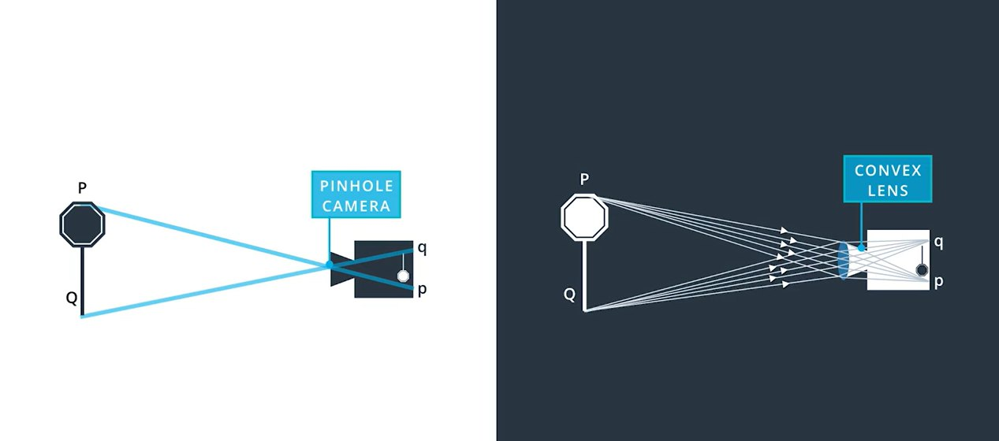
- A pinhole lets through one ray per scene point: a dark image or a very long exposure.
- A convex lens focuses many rays at once: bright images and fast shutter speeds.
- But rays bend a little too much or too little near the edges of a curved lens → distortion.
Radial distortion: the most common type
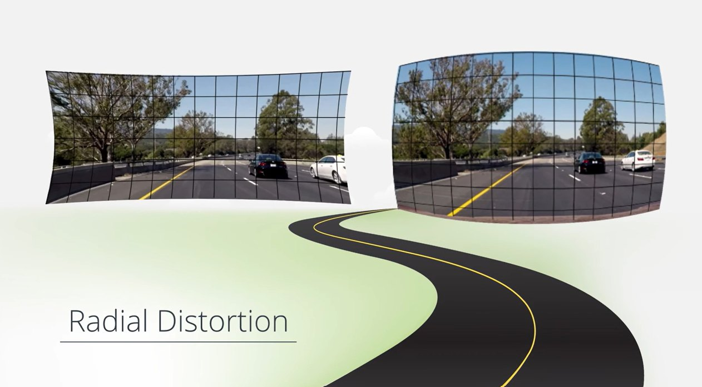
Light rays bend more (or less) the further they are from the centre of the lens. Lines and objects appear more or less curved than they are.
- Barrel (k1 < 0): lines bow outwards: wide-angle, GoPro, dash-cams
- Pincushion (k1 > 0): lines bow inwards: telephoto, some zooms
- Mustache: barrel in the centre, pincushion at the edge (k1, k2 opposite signs)
In plain words: the lens squeezes (barrel) or stretches (pincushion) the picture more and more the further you go from the centre.
Tangential distortion: a tilted lens
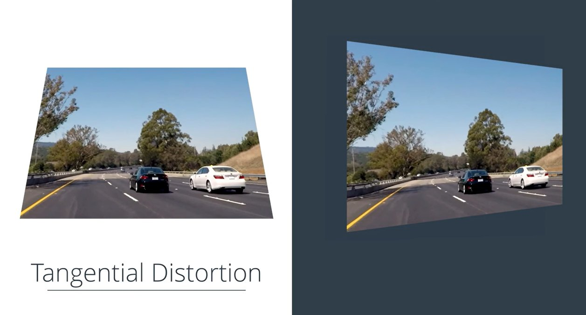
Occurs when the lens is not perfectly parallel to the imaging plane (sensor), for example from glue or assembly tolerances in cheap modules.
The image looks tilted: some objects appear farther away or closer than they actually are.
Usually much smaller than radial distortion, but cheap phone, Pi and webcam modules can show it.
Some lenses distort on purpose
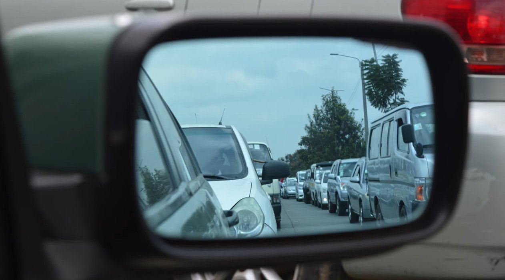
A convex car mirror: wider view, objects look farther away
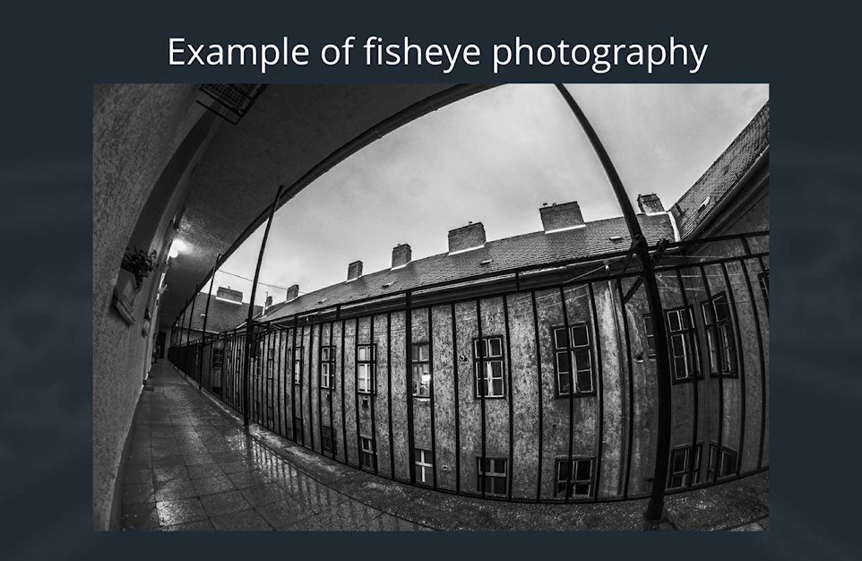
Fisheye photography: 180° field of view, extreme barrel
Fine for style or a wide view, but for measurement (steering, sizing, depth) we need images that accurately reflect the real world.
Distortion types on a straight grid
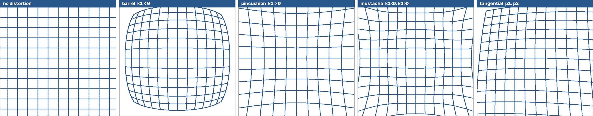
Generated with cv2.projectPoints on a flat grid: same K, different dist vectors.
Five numbers capture the distortion
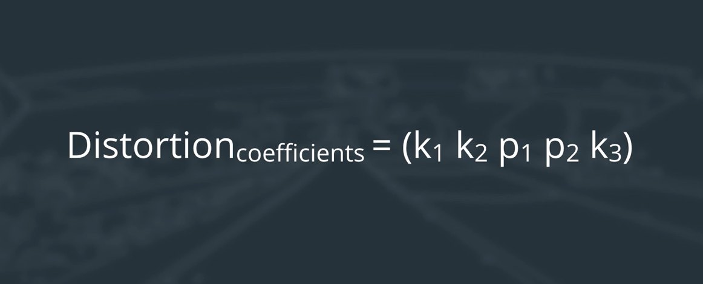
Radial, with r² = x² + y² (normalised coordinates):
\[ \begin{aligned} x_{d} &= x\,(1 + k_1 r^2 + k_2 r^4 + k_3 r^6) \\ y_{d} &= y\,(1 + k_1 r^2 + k_2 r^4 + k_3 r^6) \end{aligned} \]Tangential:
\[ \begin{aligned} x_{d} &= x + [\,2p_1 xy + p_2(r^2 + 2x^2)\,] \\ y_{d} &= y + [\,p_1(r^2 + 2y^2) + 2p_2 xy\,] \end{aligned} \]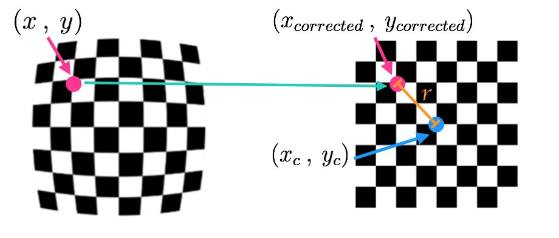
- OpenCV order:
[k1, k2, p1, p2, k3]. k3 comes last because it is only needed for strong (wide-angle) distortion. - Optional extras: rational
k4–k6, thin-prisms1–s4, tilted sensorτx, τy, so up to 14 numbers. - The equations go ideal → distorted. Undistortion inverts them numerically.
Distortion with real numbers (you can do this by hand)
A point near the edge
Normalised point (x, y) = (0.8, 0.0), so r² = 0.64. Lens: k1 = −0.2, all others 0 (a mild barrel).
factor = 1 + k1·r² = 1 − 0.2 × 0.64 = 0.872
xd = 0.8 × 0.872 = 0.698: the point moves 13 % towards the centre.
With fx = 800 px that is (0.8 − 0.698) × 800 ≈ 82 pixels!
A point near the centre
(x, y) = (0.1, 0.0), so r² = 0.01.
factor = 1 − 0.2 × 0.01 = 0.998
xd = 0.0998: it moves only 0.0002, about 0.2 pixels.
That is why the centre of a photo looks fine and the edges bend: the effect grows with r².
Take-away: distortion is tiny in the middle and huge at the edges, so calibration photos must have the board near the edges and corners.
Live demo: lens distortion explorer interactive
Quiz: name that distortion
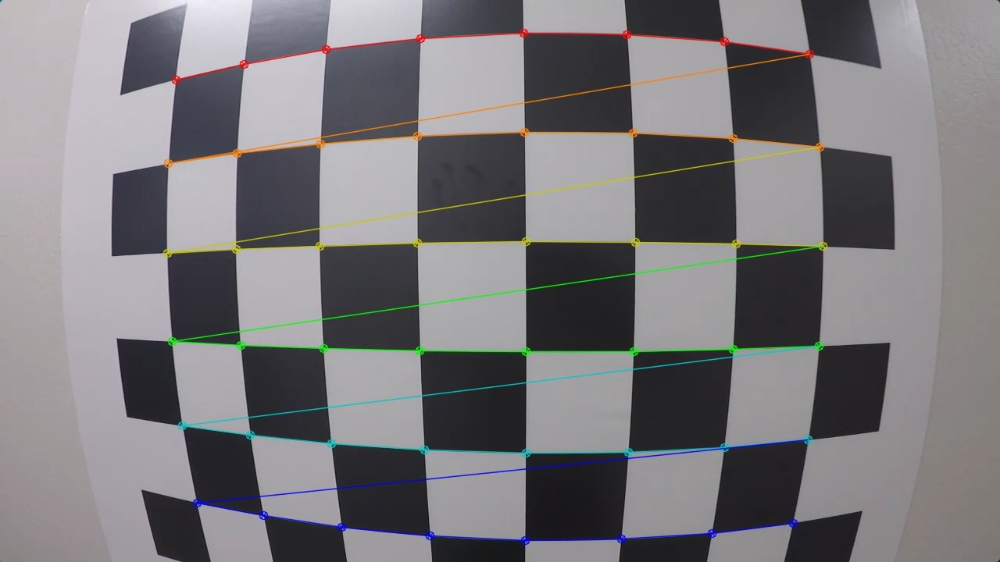
Quiz question
This chessboard was shot with a GoPro (the camera we calibrate in Lab 6).
- What kind of distortion is it? What sign do you expect for k1?
- Where in the image is the distortion strongest?
- Would a pure pinhole camera show it?
Remember
Lens distortion: the 3 things to remember
- Real lenses bend lines, mostly radially: barrel (k1 < 0) or pincushion (k1 > 0).
- OpenCV describes it with 5 numbers:
[k1, k2, p1, p2, k3]. - It is small in the centre and large at the edges (it grows with r²).
04
Types of cameras & their models
One calibration idea, many lens and sensor models
Camera types you will meet
| Camera | Typical FOV | Model to calibrate with | OpenCV | Examples |
|---|---|---|---|---|
| Standard / narrow lens | 40–70° | pinhole + radial/tangential (k1, k2, p1, p2) | cv2.calibrateCamera | Pi Cam v2/3, webcams, phone main camera |
| Wide-angle | 90–120° | pinhole + k3, or CALIB_RATIONAL_MODEL (k4–k6) | cv2.calibrateCamera | Pi Cam 3 Wide, GoPro (linear mode), dash-cams |
| Fisheye | 150–200° | Kannala–Brandt equidistant θ(1 + k1θ² + …) | cv2.fisheye.calibrate | car surround-view, drones, robot vacuum, T265 |
| Omnidirectional / catadioptric | ≥ 180–360° | unified (Mei) model with mirror parameter ξ | cv2.omnidir.calibrate (contrib) | mirror + lens rigs, 360° cameras (dual fisheye) |
| Stereo pair | any | two intrinsics + relative pose (R, T) | cv2.stereoCalibrate | ZED, OAK-D, two Pi cameras, Kaggle stereo set |
| RGB-D / ToF | 60–90° | factory-calibrated colour + depth intrinsics & extrinsics | vendor SDK, calibrateCamera on IR | RealSense, Kinect, Orbbec |
| Thermal | 25–60° | pinhole: needs a heated or emissive target | calibrateCamera | FLIR Lepton |
| Event camera | ~ 60–90° | pinhole; board shown as a blinking screen | reconstruct frames → OpenCV | Prophesee, DAVIS |
The more the field of view grows, the more the simple pinhole + polynomial model breaks down: at 90° off-axis, tan θ → ∞.
In plain words: the wider the lens sees, the more it bends lines, and the more special the maths. Normal lens → standard model; very wide → fisheye model.
Why fisheye needs a different model
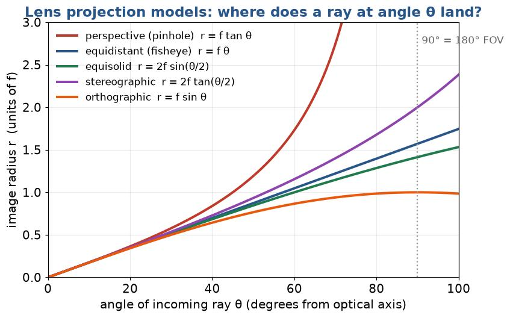
- A pinhole maps a ray at angle θ to radius r = f tan θ, which goes to infinity at 90°. No finite sensor can hold a 180° view.
- Fisheye lenses are designed so r grows slowly: equidistant r = fθ, equisolid, stereographic…
- OpenCV's fisheye module models the real lens as
θd = θ (1 + k1θ² + k2θ⁴ + k3θ⁶ + k4θ⁸), so D has 4 coefficients. - Rule of thumb: FOV above ~120°, or the standard model leaves the edges curved → switch to
cv2.fisheye.
The cameras on our lab bench: Raspberry Pi
| Module | Sensor | Resolution | Pixel | Focal length | H-FOV | Shutter | Calibrate as |
|---|---|---|---|---|---|---|---|
| Camera Module v2 | IMX219 | 3280 × 2464 | 1.12 µm | 3.04 mm | 62° | rolling | standard |
| Camera Module 3 | IMX708 | 4608 × 2592 | 1.4 µm | 4.74 mm | 66° | rolling | standard (fix the focus!) |
| Camera Module 3 Wide | IMX708 | 4608 × 2592 | 1.4 µm | 2.75 mm | 102° | rolling | wide: k3 or rational |
| HQ Camera | IMX477 | 4056 × 3040 | 1.55 µm | lens (6 mm, 16 mm…) | lens | rolling | depends on lens |
| Global Shutter Camera | IMX296 | 1456 × 1088 | 3.45 µm | lens | lens | global | depends on lens |
| M12 fisheye lens on HQ/GS | – | – | – | ~1.5–2 mm | > 180° | – | fisheye |
picam2.set_controls({"AfMode": 0, "LensPosition": …})) before you calibrate and keep it there.Calibration targets
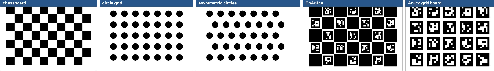
| Target | Detect with | + | − |
|---|---|---|---|
| Chessboard | findChessboardCorners, findChessboardCornersSB | easy to print, very accurate saddle points | must be fully visible; 180° ambiguity if rows = cols |
| (Asymmetric) circle grid | findCirclesGrid | robust to blur & noise | circle centres biased under strong perspective/distortion |
| ChArUco | cv2.aruco.CharucoDetector | partial views OK, every corner has an ID: ideal for fisheye & edges | needs the right dictionary & a sharp print |
| ArUco grid / AprilGrid | cv2.aruco.ArucoDetector | pose of each marker, multi-camera rigs (Kalibr) | marker corners less precise than saddles |
Making a good target (it matters more than the code)
Do
- Print at 100 % scale, then measure a square with a ruler or caliper: that is
square_size - Glue it to something rigid and flat: glass, aluminium, foam board
- Matte paper: no glare spots on the corners
- Keep a white border around the pattern (the detector needs it)
- Use different row/column counts (9 × 6, not 8 × 8) so the orientation is unambiguous
Don't
- Use a board that bends or ripples: the model assumes Z = 0 for every corner
- Show it on a laptop screen at an angle (moiré, refresh, reflections). OK only as a last resort
- Count squares instead of inner corners
- Let auto-exposure / motion blur smear the corners
Pattern generators: calib.io, OpenCV gen_pattern.py, or board.generateImage() in Lab 6E.
05
Calibrating a camera with OpenCV
Chessboard → corners → object & image points → K, dist
Measuring distortion with a known shape
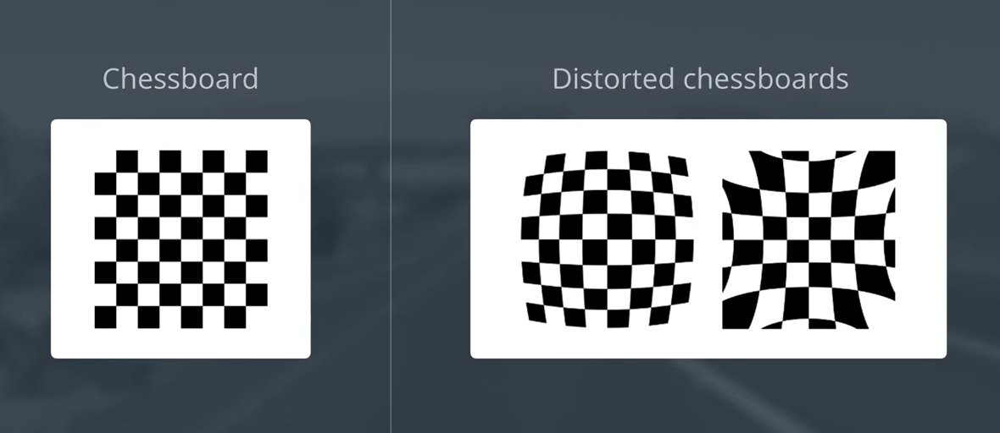
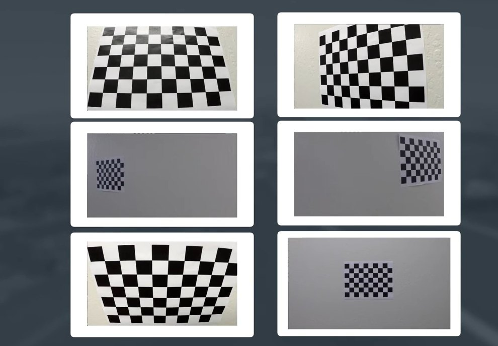
We know exactly what a flat chessboard looks like, and its regular high-contrast pattern is easy to detect automatically. Take many pictures of it at different angles and distances; the difference between the apparent and the real square shapes reveals the distortion.
Map distorted points → undistorted points
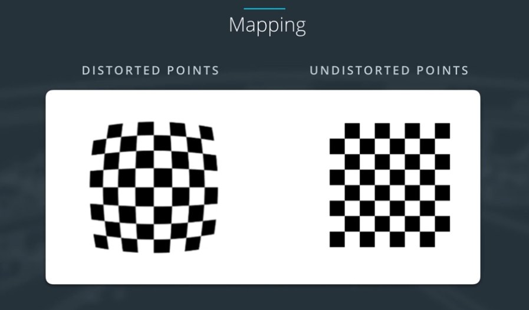
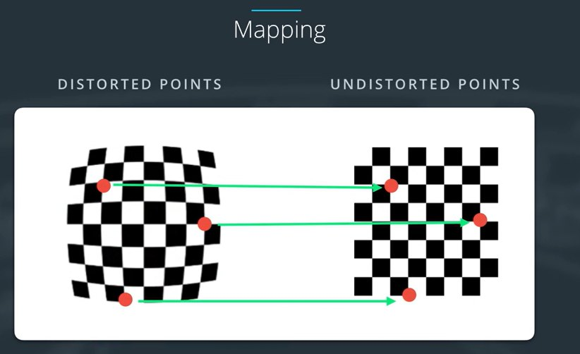
- Detect the corners in each distorted image: the image points (2-D, pixels).
- Write down where they really are on the flat board: the object points (3-D, Z = 0).
- Calibrate: find K, dist and each pose that best maps object points to image points.
- Undistort any new image from that camera.
Quiz: how many corners? interactive
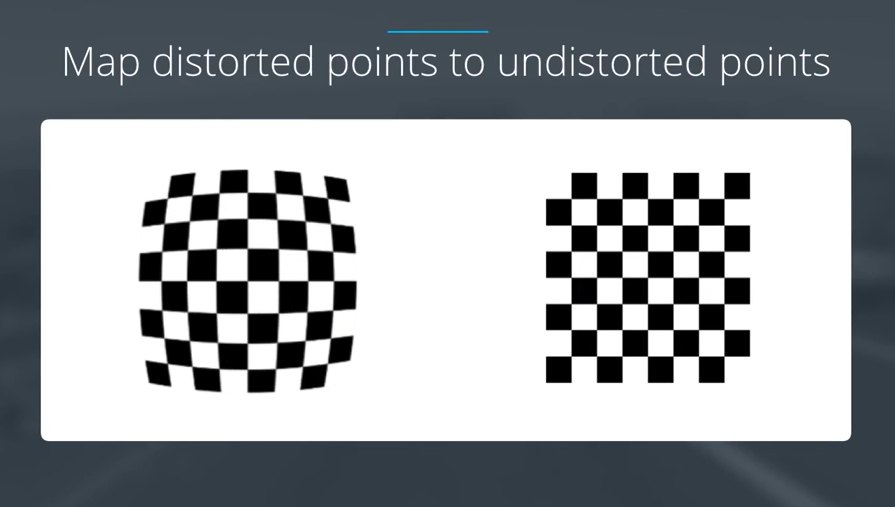
Quiz question
Count the inside corners in a row (nx) and in a column (ny) of the right-hand board. Only points where two black and two white squares meet count, not the outside corners.
patternSize you pass to OpenCV.Finding corners: findChessboardCorners
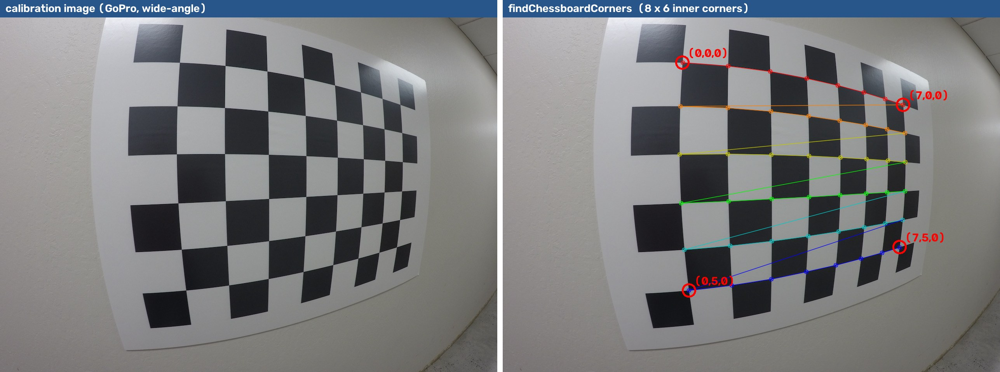
gray = cv2.cvtColor(img, cv2.COLOR_BGR2GRAY) # cv2.imread gives BGR (mpimg.imread gives RGB!)
ret, corners = cv2.findChessboardCorners(gray, (8, 6), None)
img = cv2.drawChessboardCorners(img, (8, 6), corners, ret) # coloured rows; first corner = (0,0,0)
Object points: where the corners really are
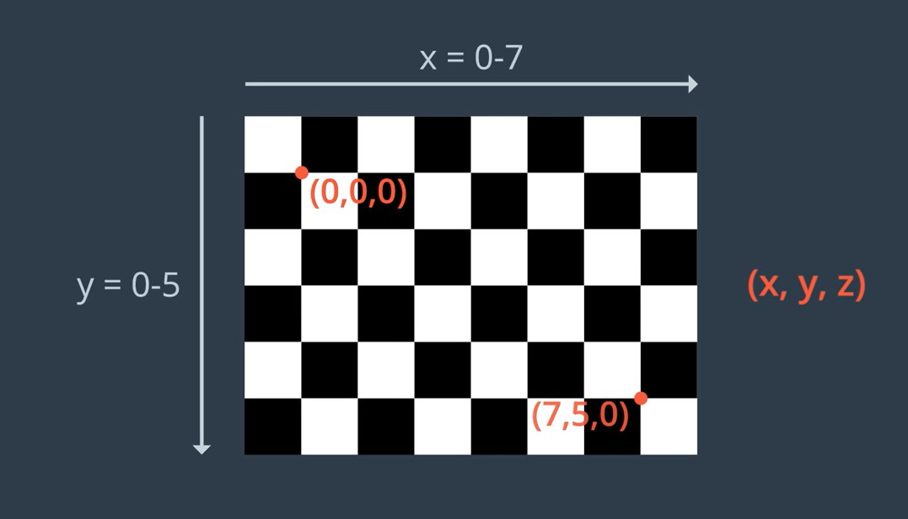
Top-left corner is (0, 0, 0), bottom-right is (7, 5, 0), not (8, 6, 0): counting starts at zero. Z = 0 for every point because the board is flat.
nx, ny = 8, 6
square = 25.0 # mm, measured on YOUR print
# (48, 3) array: (0,0,0), (1,0,0) ... (7,5,0)
objp = np.zeros((nx * ny, 3), np.float32)
objp[:, :2] = np.mgrid[0:nx, 0:ny].T.reshape(-1, 2)
objp *= square # now in millimetres
objpoints = [] # 3-D points in the board frame
imgpoints = [] # 2-D points in the image
Units of objp = units of tvec. In squares K and dist are still correct, but distances come out in squares. Multiply by the square size to get mm.
Refining to sub-pixel accuracy
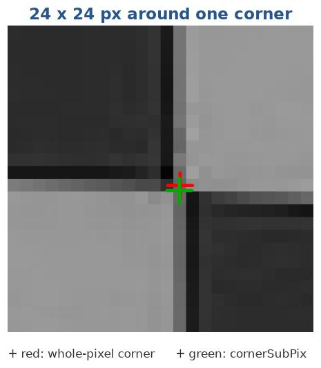
The saddle point between four squares is not on a pixel centre. cornerSubPix moves each corner to where the image gradients around it are orthogonal to the vector to the corner, typically to 0.1 px.
crit = (cv2.TERM_CRITERIA_EPS +
cv2.TERM_CRITERIA_MAX_ITER, 30, 1e-3)
corners = cv2.cornerSubPix(gray, corners,
(11, 11), (-1, -1), crit)
# OpenCV ≥ 4.3: sector-based detector, more
# accurate and robust, sub-pixel built in
ret, corners = cv2.findChessboardCornersSB(
gray, (8, 6), cv2.CALIB_CB_EXHAUSTIVE +
cv2.CALIB_CB_ACCURACY)
Window (11, 11) means a 23 × 23 search area: keep it smaller than one square in the image.
Calibration, step 1: collect points from every image
import glob, cv2, numpy as np
nx, ny = 8, 6
objp = np.zeros((nx * ny, 3), np.float32)
objp[:, :2] = np.mgrid[0:nx, 0:ny].T.reshape(-1, 2)
objpoints, imgpoints = [], []
images = sorted(glob.glob("calibration_wide/GOPR*.jpg"))
for fname in images:
img = cv2.imread(fname)
gray = cv2.cvtColor(img, cv2.COLOR_BGR2GRAY)
ret, corners = cv2.findChessboardCorners(gray, (nx, ny), None)
if ret: # skip images where the board is not found
corners = cv2.cornerSubPix(gray, corners, (11, 11), (-1, -1), crit)
objpoints.append(objp) # same for every image
imgpoints.append(corners)
print(f"board found in {len(imgpoints)} / {len(images)} images") # 35 / 36
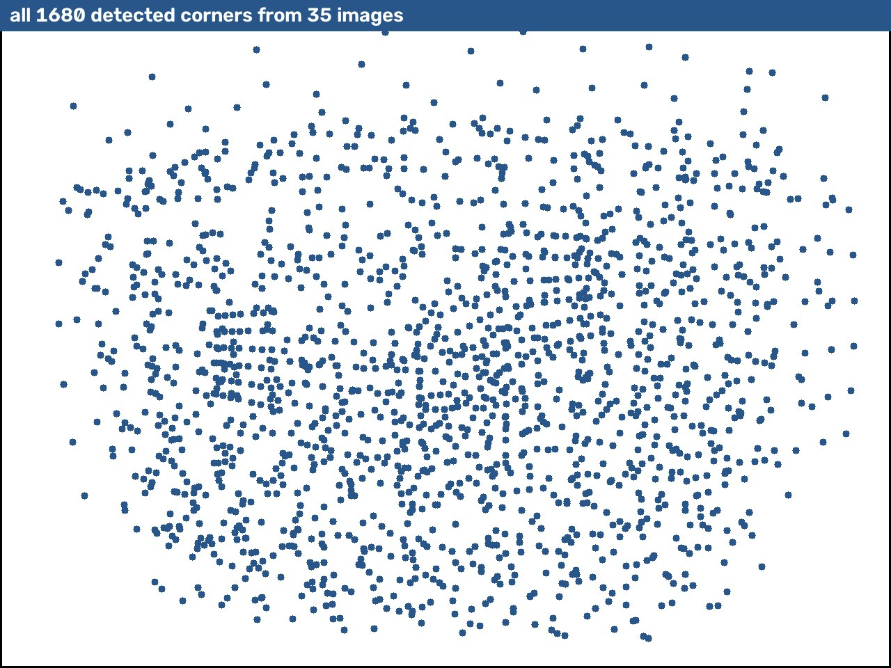
All 1680 corners from the 35 GoPro images: they cover the whole frame, corners included. That is what makes a calibration reliable.
Calibration, step 2: cv2.calibrateCamera
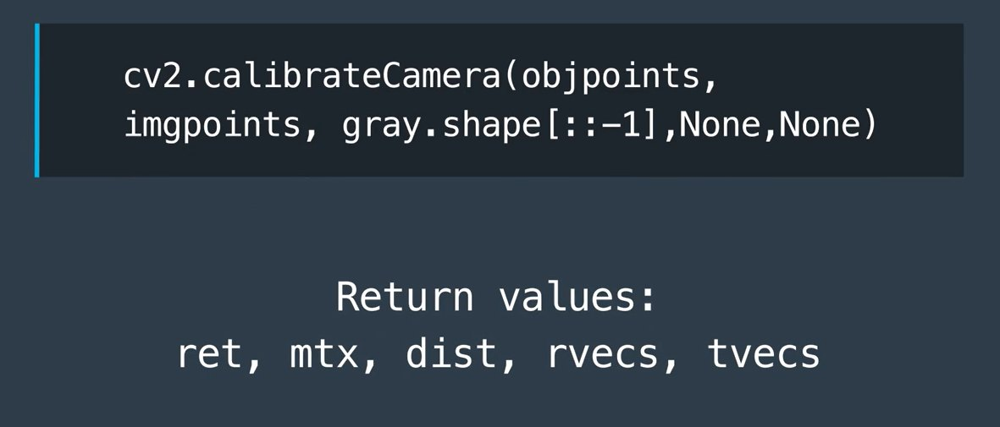
ret, mtx, dist, rvecs, tvecs = cv2.calibrateCamera(
objpoints, imgpoints, gray.shape[::-1], None, None)
print("RMS reprojection error:", ret) # 0.82 px
print(mtx) # [[560.0 0.0 651.1]
# [ 0.0 561.1 498.9]
# [ 0.0 0.0 1.0]]
print(dist) # [[-0.233 0.062 0.000 0.000 -0.008]]
Image size: (width, height)!
gray.shape is (960, 1280) = (rows, cols). OpenCV wants (1280, 960) = (w, h), hence gray.shape[::-1].
For a colour image use img.shape[1::-1]. Passing the full (960, 1280, 3) raises an error.
What comes back
ret: RMS reprojection error (px)mtx: K (3 × 3);dist: (1 × 5)rvecs, tvecs: one board pose per image
What happens inside: Zhang's method (2000)
- For each view, the flat board (Z = 0) maps to the image by a homography: \( \mathbf{x} \simeq H\,[X\;Y\;1]^\top \), with \( H = K\,[\mathbf{r}_1\;\mathbf{r}_2\;\mathbf{t}] \).
- Columns r1, r2 of a rotation are orthonormal, which gives 2 equations per view on \( B = K^{-\top}K^{-1} \):
\( \mathbf{h}_1^\top B\,\mathbf{h}_2 = 0, \;\; \mathbf{h}_1^\top B\,\mathbf{h}_1 = \mathbf{h}_2^\top B\,\mathbf{h}_2 \) - B has 5 unknowns (zero skew: 4) → ≥ 3 views (≥ 2 with zero skew) give a closed-form K; then each view's R, t.
- Non-linear Levenberg–Marquardt refinement of K, dist and all poses together, minimising the reprojection error.
Only a printed board, no expensive 3-D rig, so it is used everywhere: OpenCV, MATLAB, ROS.
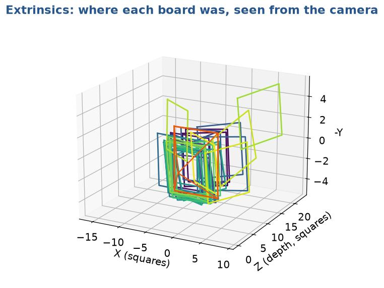
The 35 recovered board poses (rvecs, tvecs) seen from the camera (orange).
Watch: Camera Calibration using Zhang's Method and Intrinsic Camera Calibration (Cyrill Stachniss).
In plain words: every tilted photo of the flat board gives two clues about K. Three photos give enough clues to solve K; then a computer polishes all numbers together.
Is the calibration any good? Reprojection error
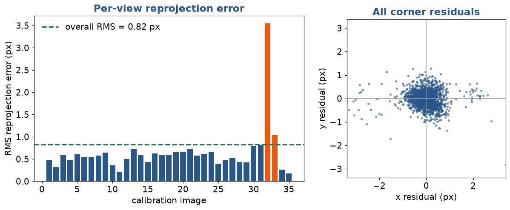
Project the object points with the estimated model and compare with the detected corners.
- < 0.5 px: good; 0.5–1 px: acceptable; > 1 px: investigate
- One view at 3.5 px (orange): blurred or mis-detected. Drop it and recalibrate (Lab 6C).
- Low error ≠ correct: 3 nearly identical views can also fit well. Check coverage, too.
In plain words: put the board back into the picture using the model and measure how far the predicted corners are from the real ones. Small = the model explains the photos well.
Per-view error and saving the result
errs = []
for objp_i, imgp_i, r, t in zip(objpoints, imgpoints,
rvecs, tvecs):
proj, _ = cv2.projectPoints(objp_i, r, t, mtx, dist)
d = imgp_i.reshape(-1, 2) - proj.reshape(-1, 2)
errs.append(np.sqrt((d ** 2).sum(1).mean()))
worst = np.argsort(errs)[::-1][:3]
print("worst views:", [images[i] for i in worst])
# Uncertainty of each intrinsic (std. dev.)
ret, mtx, dist, rv, tv, std_in, std_ex, per_view = \
cv2.calibrateCameraExtended(objpoints, imgpoints,
size, None, None)
print("fx = %.1f ± %.1f px" % (mtx[0, 0], std_in[0, 0]))
# Save: portable YAML that C++, ROS and Python can read
fs = cv2.FileStorage("camera.yaml", cv2.FILE_STORAGE_WRITE)
fs.write("image_width", size[0]); fs.write("image_height", size[1])
fs.write("camera_matrix", mtx)
fs.write("distortion_coefficients", dist)
fs.write("rms", ret)
fs.release()
# Load it back
fs = cv2.FileStorage("camera.yaml", cv2.FILE_STORAGE_READ)
K = fs.getNode("camera_matrix").mat()
D = fs.getNode("distortion_coefficients").mat()
# or simply
np.savez("camera.npz", K=mtx, dist=dist)
# (Udacity used pickle: wide_dist_pickle.p)
How to take good calibration images
Coverage & variety
- 15–30 images (Udacity: ≥ 20)
- Board in every part of the frame, especially the corners, where distortion is largest
- Tilt the board ±30–45° in both axes. Frontal-only views cannot separate f from distance
- Vary the distance: near (board fills the frame) and far
Quality
- Sharp: still board, good light, short exposure
- Same resolution, focus and zoom you will use later: K changes with all three
- Do not crop or resize the images before calibration
- Check the per-view error and coverage, re-shoot the gaps
The ROS calibrator turns this advice into four progress bars, X, Y, Size and Skew, and only enables CALIBRATE once your views cover enough of each. Try it on the next slide.
Live demo: collect a good calibration set interactive
Bars follow ROS camera_calibration: the spread of the board's centre (X, Y), apparent size and skew over the accepted samples. Samples too similar to an earlier one are rejected.
The same idea in ROS 2: camera_calibration
# install (ROS 2 Humble / Jazzy / Rolling)
sudo apt install ros-$ROS_DISTRO-camera-calibration
# monocular: 8x6 inner corners, 25 mm squares
ros2 run camera_calibration cameracalibrator \
--size 8x6 --square 0.025 \
--ros-args -r image:=/camera/image_raw \
-p camera:=/camera
# stereo pair
ros2 run camera_calibration cameracalibrator \
--size 8x6 --square 0.025 --approximate 0.1 \
--ros-args -r left:=/left/image_raw -r right:=/right/image_raw
# fisheye lens: --camera-model fisheye
# ChArUco board: --pattern charuco --charuco_marker_size 0.019 --aruco_dict 5x5_100
How it works
- Uses OpenCV under the hood: the Python module
camera_calibration.calibrator(MonoCalibrator,StereoCalibrator) - Move the board until the X / Y / Size / Skew bars go green → CALIBRATE → SAVE / COMMIT
- Writes a
camera_infoYAML (K, D, R, P), loaded bycamera_info_managerand used byimage_procto publishimage_rect - Models:
pinhole(plumb-bob) andfisheye(equidistant)
Calibration, step 3: undistort
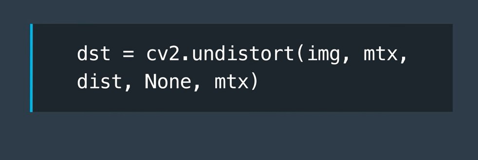
- Takes a distorted image, K and dist; returns the corrected destination image
- The last argument is the new camera matrix; passing
mtxkeeps the same focal length - For every output pixel OpenCV computes where it came from (the distortion model) and interpolates
Straight lines on the board are straight again: the calibration worked.
Quiz: write cal_undistort()
import pickle, cv2, numpy as np
# Saved objpoints and imgpoints (Udacity wide_dist_pickle.p)
dist_pickle = pickle.load(open("wide_dist_pickle.p", "rb"))
objpoints = dist_pickle["objpoints"]
imgpoints = dist_pickle["imgpoints"]
img = cv2.imread("test_image.png")
# TODO: take an image, object points and image points,
# calibrate, undistort and return the undistorted image
def cal_undistort(img, objpoints, imgpoints):
undist = np.copy(img) # delete this line
return undist
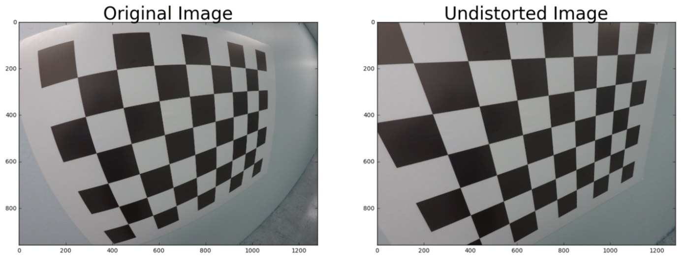
One solution
def cal_undistort(img, objpoints, imgpoints):
gray = cv2.cvtColor(img, cv2.COLOR_BGR2GRAY)
ret, mtx, dist, rvecs, tvecs = cv2.calibrateCamera(
objpoints, imgpoints, gray.shape[::-1], None, None)
return cv2.undistort(img, mtx, dist, None, mtx)
In practice calibrate once, save mtx and dist, and only call undistort per frame. Lab 6C has an auto-check.
Keep or crop the borders? getOptimalNewCameraMatrix
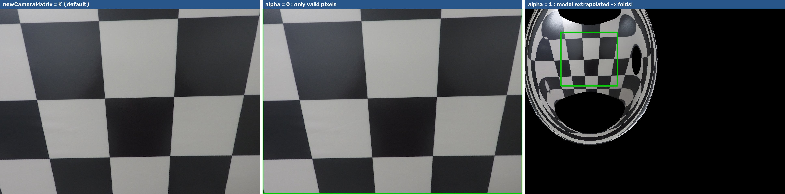
h, w = img.shape[:2]
newK, roi = cv2.getOptimalNewCameraMatrix(
mtx, dist, (w, h), alpha=0) # 0 … 1
und = cv2.undistort(img, mtx, dist, None, newK)
x, y, rw, rh = roi # green box
und = und[y:y + rh, x:x + rw] # crop black edges
- alpha = 0: zoom in until every output pixel is valid (loses a little FOV)
- alpha = 1: keep all source pixels (black curved borders)
- Here alpha = 1 folds: the 5-coefficient polynomial is only valid where there were corners. Try
CALIB_RATIONAL_MODELor fisheye for wide lenses (Lab 6C).
Undistorting video fast: compute the map once
# once, at start-up
newK, roi = cv2.getOptimalNewCameraMatrix(K, dist, (w, h), 0)
map1, map2 = cv2.initUndistortRectifyMap(
K, dist, None, newK, (w, h), cv2.CV_16SC2)
cap = cv2.VideoCapture(0) # or Picamera2 frames
while True:
ok, frame = cap.read()
if not ok: break
und = cv2.remap(frame, map1, map2, cv2.INTER_LINEAR)
cv2.imshow("undistorted", und)
if cv2.waitKey(1) == 27: break
# undistort only some points (e.g. detected corners, lane pixels)
pts_ud = cv2.undistortPoints(pts, K, dist, P=newK)
Why it is faster
cv2.undistort recomputes the distortion model for every pixel on every call.
initUndistortRectifyMap stores the source coordinate of each output pixel once; remap is then a pure lookup: several times faster, which matters at 30 fps on a Raspberry Pi.
If you only need a few points, undistortPoints avoids warping the image at all.
Common calibration pitfalls
| Symptom | Likely cause |
|---|---|
ret is False for many images | wrong (nx, ny): squares instead of inner corners; board cut off by the frame; glare |
calibrateCamera error about sizes | passed img.shape with 3 channels, or images of different sizes (two Udacity images are 1281 × 721!) |
| RMS > 1 px | blur, a bent board, a mis-detected view: check per-view errors |
| Edges still curved / folded after undistort | no corners near the image edges; lens too wide for the model → k3, rational, or fisheye |
| Good RMS, wrong distances | wrong square_size; calibrated at another resolution or focus |
| Image upside-down / mirrored axes | symmetric board (8 × 8): use nx ≠ ny |
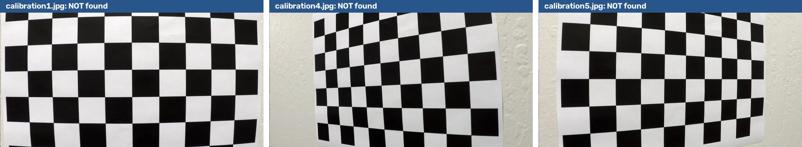
3 of the 20 road-camera images fail: part of the board is outside the frame. Fine for a chessboard: they are skipped. A ChArUco board would still use them.
Lab 6F is a bug hunt with these pitfalls planted in the code.
Remember
Calibrating with OpenCV: the 3 things to remember
- Corners:
findChessboardCorners+cornerSubPix, count the inner corners. calibrateCamera(objpoints, imgpoints, (w, h))→ K, dist and one pose per photo.- Judge it with the RMS reprojection error (< 0.5 px good, > 1 px re-shoot), then
undistort/remap.
06
Beyond the basic chessboard
ChArUco boards · fisheye lenses · stereo pairs · your own Raspberry Pi camera
ChArUco: a chessboard with an ID on every square
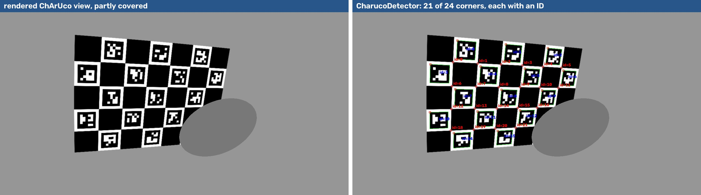
- ArUco markers inside the white squares tell the detector which corner it is seeing
- So partial, occluded or out-of-frame boards still give corners: perfect for covering image edges and fisheye lenses
- Corners are chessboard saddle points → as accurate as a chessboard
Watch: How to do Camera Calibration with ChArUco Boards (Nicolai Nielsen) · OpenCV tutorial: calibration with ArUco and ChArUco
ChArUco calibration: the code (OpenCV ≥ 4.7 / 5)
import cv2, glob
aruco_dict = cv2.aruco.getPredefinedDictionary(cv2.aruco.DICT_5X5_100)
board = cv2.aruco.CharucoBoard((7, 5), # squares x, y
0.040, 0.030, # square, marker (m)
aruco_dict)
cv2.imwrite("board.png", board.generateImage((2100, 1500), marginSize=60))
detector = cv2.aruco.CharucoDetector(board)
all_obj, all_img = [], []
for f in glob.glob("charuco/*.jpg"):
gray = cv2.imread(f, cv2.IMREAD_GRAYSCALE)
ch_corners, ch_ids, m_corners, m_ids = detector.detectBoard(gray)
if ch_ids is not None and len(ch_ids) >= 6: # partial view is fine
obj, img = board.matchImagePoints(ch_corners, ch_ids)
all_obj.append(obj); all_img.append(img)
rms, K, dist, rvecs, tvecs = cv2.calibrateCamera(
all_obj, all_img, gray.shape[::-1], None, None)
Notes
- The old
cv2.aruco.calibrateCameraCharuco/interpolateCornersCharucowere removed in 4.7+. UseCharucoDetector+matchImagePoints. - Measure both the square and marker size on the print.
- Pick a dictionary with few markers (e.g. 5×5_100) for better robustness.
- Lab 6E renders synthetic ChArUco views with a known camera, so you can check your calibration against the ground truth.
Fisheye lenses: cv2.fisheye
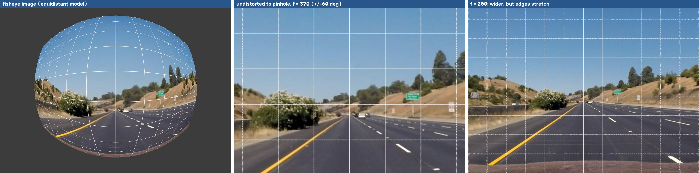
# per view: objpoints (1,N,3) float64, imgpoints (1,N,2) float64
# OpenCV 5: cv2.CALIB_* (OpenCV 4: cv2.fisheye.CALIB_*)
flags = cv2.CALIB_RECOMPUTE_EXTRINSIC | cv2.CALIB_FIX_SKEW
rms, K, D, rvecs, tvecs = cv2.fisheye.calibrate(
objpoints, imgpoints, (w, h), None, None, flags=flags) # D = [k1..k4]
newK = cv2.fisheye.estimateNewCameraMatrixForUndistortRectify(
K, D, (w, h), np.eye(3), balance=0.0) # 0 crop … 1 keep all
m1, m2 = cv2.fisheye.initUndistortRectifyMap(K, D, np.eye(3), newK, (w, h), cv2.CV_16SC2)
und = cv2.remap(img, m1, m2, cv2.INTER_LINEAR)
- The whole 180° view cannot fit into one pinhole image: choose a narrower newK (middle) or accept stretched edges (right)
- Points must be float64, shape (1, N, 3): OpenCV 5 rejects the old (N, 1, 3). The #1 fisheye error
- Very wide (> 200°) or mirror cameras:
cv2.omnidir(contrib)
Stereo calibration: two cameras, one rig
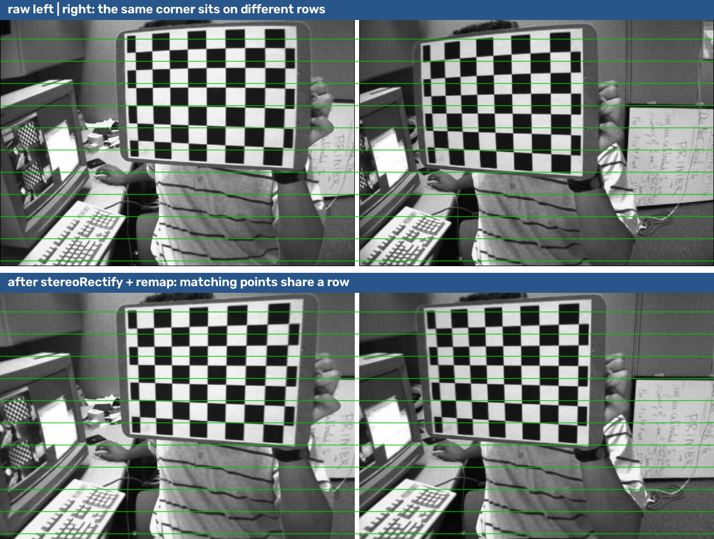
- Capture the board with both cameras at the same moment (hardware sync or a still board)
- Calibrate each camera → K1, D1, K2, D2
stereoCalibrate→ R, T between the cameras (+ E, F)stereoRectify→ rotations that make epipolar lines horizontalinitUndistortRectifyMap+remapper frame → disparity → depth
OpenCV's left/right sample pair: RMS 0.45 px, baseline 3.3 squares along −x.
Depth from disparity, Z = fB/d, is Lecture 10. Datasets: Kaggle stereo chessboard pictures.
Stereo calibration: the code
# objpoints, imgL, imgR: corners found in BOTH images of each pair
_, K1, D1, _, _ = cv2.calibrateCamera(objpoints, imgL, size, None, None)
_, K2, D2, _, _ = cv2.calibrateCamera(objpoints, imgR, size, None, None)
rms, K1, D1, K2, D2, R, T, E, F = cv2.stereoCalibrate(
objpoints, imgL, imgR, K1, D1, K2, D2, size,
flags=cv2.CALIB_FIX_INTRINSIC) # keep the mono results, solve only R, T
print("stereo RMS", rms, "baseline", np.linalg.norm(T) * square_mm, "mm")
R1, R2, P1, P2, Q, roi1, roi2 = cv2.stereoRectify(K1, D1, K2, D2, size, R, T, alpha=0)
mapL = cv2.initUndistortRectifyMap(K1, D1, R1, P1, size, cv2.CV_16SC2)
mapR = cv2.initUndistortRectifyMap(K2, D2, R2, P2, size, cv2.CV_16SC2)
rectL = cv2.remap(left, *mapL, cv2.INTER_LINEAR)
rectR = cv2.remap(right, *mapR, cv2.INTER_LINEAR) # now matching points share a row
Two Raspberry Pi cameras on a bracket (or the Pi 5's two CSI ports) make a cheap stereo rig. Keep them rigidly mounted: any movement invalidates R, T. See Raspberry Pi stereo camera calibration.
Check the rectified pair: draw horizontal lines. If the same corner is on different rows, the calibration or the synchronisation is off.
Challenge: calibrate your own camera
# capture_calib.py (Lab 6H): Pi camera or USB webcam
from picamera2 import Picamera2 # USB: cv2.VideoCapture(0)
import cv2, time, os
picam2 = Picamera2()
picam2.configure(picam2.create_still_configuration(
main={"size": (1920, 1080), "format": "RGB888"}))
picam2.start()
picam2.set_controls({"AfMode": 0, "LensPosition": 0.0}) # Module 3: lock focus
os.makedirs("calib_images", exist_ok=True)
for i in range(25):
time.sleep(3) # move the board, hold still
frame = picam2.capture_array()
gray = cv2.cvtColor(frame, cv2.COLOR_BGR2GRAY)
ok, _ = cv2.findChessboardCorners(gray, (9, 6),
cv2.CALIB_CB_FAST_CHECK)
cv2.imwrite(f"calib_images/img_{i:02d}.jpg", frame)
print(i, "board found" if ok else "NO board: move it")
Recipe
- Print a 9 × 6 board (pattern.png), stick it to a flat board, measure a square
- Take 20–30 pictures over the whole field of view, especially near the edges
- Run
calibrate.py --board 9x6 --square 24.5→camera.yaml - Check RMS < 0.5–1 px and that straight lines are straight
- Commit
camera.yamlnext to your project code

Based on Petros626/Camera-Calibration-with-PiCamera2-OpenCV, niconielsen32/camera-calibration, nuwandda/Checkerboard-Calibration, ibois-epfl/rgb-camera-calibration.
Calibration tools in the wild
| Tool | Best for | Notes |
|---|---|---|
OpenCV calib3d (cv2.calibrateCamera, fisheye, stereoCalibrate, aruco) | everything in this course | calib3d reference: models, flags, functions |
OpenCV interactive-calibration app | guided live calibration | suggests the next pose, shows per-parameter uncertainty |
ROS 2 camera_calibration | robots, mono/stereo, fisheye, ChArUco | X/Y/Size/Skew bars → camera_info YAML |
| MATLAB Camera Calibrator / Stereo Camera Calibrator | teaching, quick visual checks | error plots and 3-D pose views |
| Kalibr (ETH Zürich) | multi-camera + IMU, rolling shutter | AprilGrid targets; the standard for VIO / SLAM rigs |
| calib.io camera calibrator, mrcal (NASA JPL) | high-accuracy industrial / metrology | richer lens models, uncertainty maps |
Whatever the tool, the inputs and outputs are the same: known 3-D target points + detected 2-D corners → K, distortion, poses, reprojection error.
07
Perspective transform & lane curvature
Using the undistorted image to measure the road
Why we need all this: lane curvature
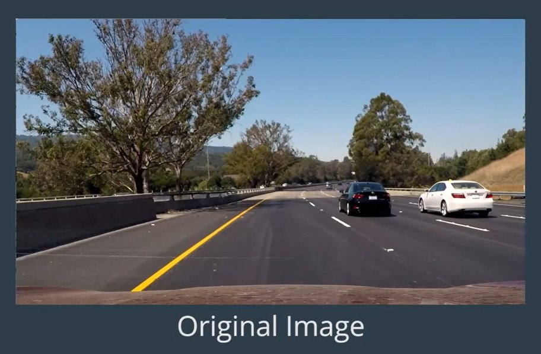
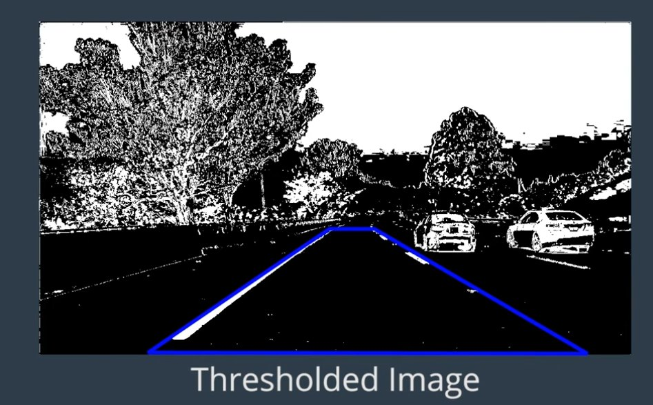
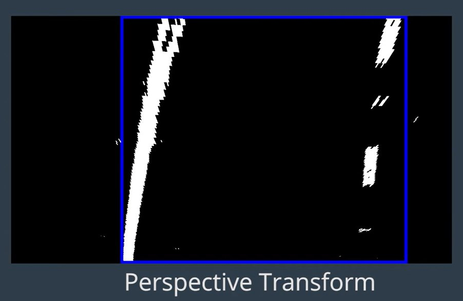
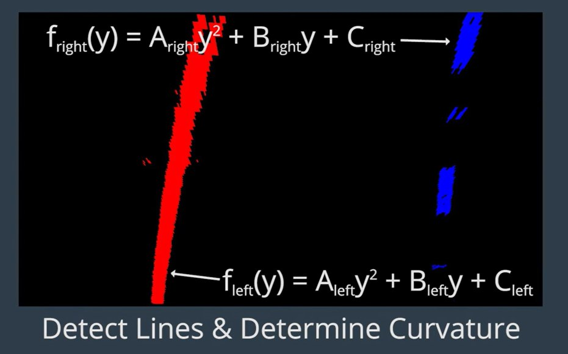
A self-driving car needs a steering angle, which comes from the car's speed and dynamics and how much the lane curves:
- threshold the lane pixels (Lecture 5)
- perspective transform → bird's-eye view
- fit a polynomial to each line
- compute the curvature
For a near-vertical lane line
\[ f(y) = Ay^2 + By + C \]A → curvature · B → heading (direction) · C → position (offset from the left of the image)
\[ R_{curve} = \frac{(1 + (2Ay + B)^2)^{3/2}}{|2A|} \]Perspective: far things look small, parallel lines meet
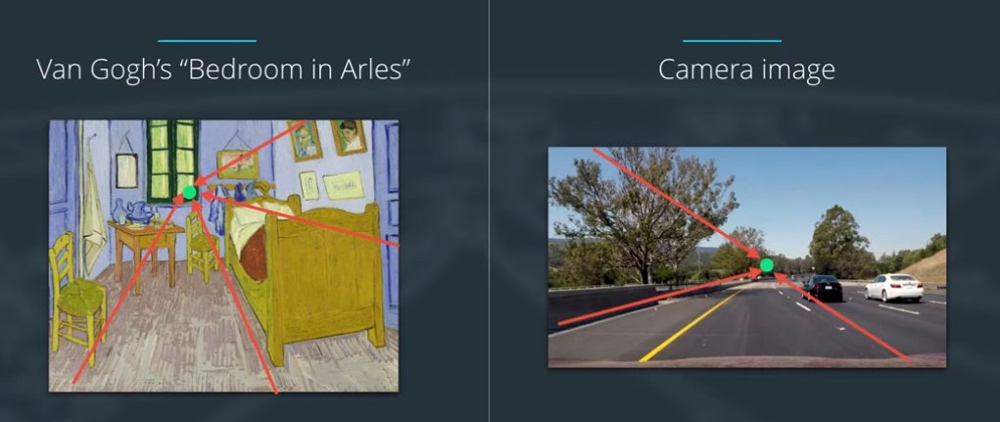
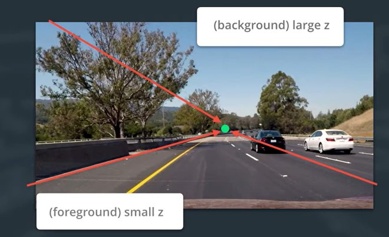
The greater an object's Z (distance from the camera), the smaller it appears: the 1/Z of the pinhole model. Artists use the same rule. Lane lines that are parallel on the road converge to a vanishing point in the image.
A perspective transform changes the viewpoint
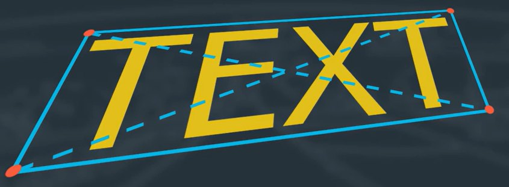
4 points on a plane in the image …
… mapped to 4 points of a rectangle
A perspective transform maps the points of a given image to different, desired image points, as if seen from a new viewpoint. It effectively drags points towards or away from the camera. Four point pairs are enough to define it (a 3 × 3 homography with 8 degrees of freedom).
In plain words: four corners of a flat thing are enough to tell OpenCV how to "walk around" it and photograph it from the front or from above.
The bird's-eye view of a road
- From the car's camera, the left line seems to lean and curve to the right, the right line to lean left without much curve.
- From above, both lines are parallel, a consistent width apart, and curve by the same amount.
- A top-down view also lines up directly with a map.
Quiz: why a bird's-eye view?
Quiz question
For images from a front-facing car camera, why do we want to perform a perspective transform?
- Because it is more straightforward to take a gradient on a top-down view.
- Because ultimately we want to measure the curvature of the lines, and to do that we need to transform to a top-down view.
- Because transforming the perspective removes the effect of curvature from our measurement.
- Because it removes the effect of shadows and colour differences.
Example: transform a stop sign
- Pick 4 source points that define a rectangle on a plane in the image (the face of the sign)
- Pick 4 destination points: where they should appear in the warped image
getPerspectiveTransform(src, dst)→ MwarpPerspective(img, M, size)→ the warped image
A traffic sign is a good test because text shows clearly whether the transform is right.
Perspective transform: the code
def warp(img):
img_size = (img.shape[1], img.shape[0]) # (w, h)
# four source points on the sign (read off by hovering
# the mouse over the image), clockwise from top-right
src = np.float32([[850, 320], [865, 450],
[533, 350], [535, 210]])
# where we want them: a front-facing rectangle
dst = np.float32([[870, 240], [870, 370],
[520, 370], [520, 240]])
M = cv2.getPerspectiveTransform(src, dst)
Minv = cv2.getPerspectiveTransform(dst, src) # to un-warp
warped = cv2.warpPerspective(img, M, img_size,
flags=cv2.INTER_LINEAR)
return warped
Choosing points by hand is fine for a fixed car camera (do it once). Many systems pick them automatically from corners, edges or detected objects, as you will with chessboard corners in the next quiz.
Live demo: drag four points → bird's-eye view interactive
Drag the 4 red handles onto the lane lines (undistorted frame, Lab 6D camera).
Warped: good points make the lane lines vertical and parallel.
Undistort → warp → fit: on the real road camera
Top: src = [[577,463],[707,463],[1110,720],[205,720]] → dst = [[300,0],[980,0],[980,720],[300,720]]. Bottom: lane pixels in the bird's-eye view, second-order fits and the radius in metres (assuming 30 m per 720 px vertically and 3.7 m per 700 px horizontally; Lab 6D).
Quiz: undistort and transform a chessboard
Given mtx and dist, write corners_unwarp(img, nx, ny, mtx, dist):
- Undistort with
cv2.undistort - Convert to grayscale and find the chessboard corners; draw them
- src = the outer 4 detected corners
- dst = 4 points of a rectangle, in the same order as src
getPerspectiveTransform→ M;warpPerspective→ top-down view
def corners_unwarp(img, nx, ny, mtx, dist):
undist = cv2.undistort(img, mtx, dist, None, mtx)
gray = cv2.cvtColor(undist, cv2.COLOR_BGR2GRAY)
ret, corners = cv2.findChessboardCorners(gray, (nx, ny), None)
M, warped = None, undist
if ret:
corners = corners.reshape(-1, 2) # (N,1,2) in 4.x, (N,2) in 5.0
cv2.drawChessboardCorners(undist, (nx, ny), corners, ret)
offset = 100
w, h = gray.shape[1], gray.shape[0]
src = np.float32([corners[0], corners[nx - 1],
corners[-1], corners[-nx]])
dst = np.float32([[offset, offset], [w - offset, offset],
[w - offset, h - offset], [offset, h - offset]])
M = cv2.getPerspectiveTransform(src, dst)
warped = cv2.warpPerspective(undist, M, (w, h))
return warped, M
Undistort & transform: the result
Our solution on a GoPro image from Lab 6. Note the order: undistort first. A homography maps straight lines to straight lines, so it cannot remove lens curvature.
findChessboardCorners returns corners of shape (N, 2); OpenCV 4.x returned (N, 1, 2). Code like corners[0][0] breaks. Use corners.reshape(-1, 2) to work with both.Quiz: match each process to its purpose
Matching challenge
Processes: ① Camera calibration · ② Distortion correction · ③ Perspective transform
Purposes:
- To transform an image so that we are effectively viewing objects from a different angle or direction.
- To ensure that the geometrical shape of objects is represented consistently, no matter where they appear in an image.
- To compute the transformation between 3-D object points in the world and 2-D image points.
- To measure the orientation angles of objects in an image. (distractor)
D is not a purpose of any of the three on its own.
Remember
Perspective transform: the 3 things to remember
- Undistort first, then warp: a homography keeps straight lines straight, so it cannot fix lens curves.
- 4 point pairs →
getPerspectiveTransform→warpPerspective. - Bird's-eye view → fit x = Ay² + By + C → lane curvature in metres.
Watch & learn: recommended videos
 Intrinsics & extrinsics
Intrinsics & extrinsicsCyrill Stachniss · 5 min
 Intrinsic camera calibration
Intrinsic camera calibrationCyrill Stachniss · 5 min
 Zhang's method
Zhang's methodCyrill Stachniss · lecture
 Camera calibration explained, step by step
Camera calibration explained, step by stepKevin Wood
 OpenCV Python calibration (intrinsic, extrinsic, distortion)
OpenCV Python calibration (intrinsic, extrinsic, distortion)Kevin Wood
 Camera calibration in < 5 minutes
Camera calibration in < 5 minutesNicolai Nielsen
 Calibration with a Python script
Calibration with a Python scriptNicolai Nielsen
 ChArUco board calibration
ChArUco board calibrationNicolai Nielsen
 Calibrate an OpenCV camera in 15 minutes
Calibrate an OpenCV camera in 15 minutesThe Drone Dojo (Raspberry Pi)
Hands-on · Video lab 6I
Calibrate your Raspberry Pi camera in 15 minutes
# on the Pi (SSH + VNC), Raspberry Pi OS Bookworm
mkdir -p ~/calib && cd ~/calib
for f in pi_calibrate_20.py aruco_pose_test.py; do
wget https://raw.githubusercontent.com/Kazimbalti/\
intelligent-vision-systems/main/LAB/Lab_6/$f; done
wget https://raw.githubusercontent.com/opencv/opencv/4.x/doc/pattern.png
sudo apt install -y python3-opencv python3-picamera2
# 1. calibrate: 26 mm squares, 640 x 480 (as in the video)
python3 pi_calibrate_20.py --mm 26 --width 640 --height 480
# 2. print a marker, measure it, test with a ruler
python3 aruco_pose_test.py --make-marker --id 72
python3 aruco_pose_test.py --size 200 --id 72 \
--width 640 --height 480
- Print pattern.png on A4, glue it flat, measure a square
- The script keeps 20 good, different frames by itself: show the edges first, then near, far, tilted
- It saves
cameraMatrix.txt,cameraDistortion.txt,camera.yaml - Ruler test: centre an ArUco marker (x ≈ 0), slide it 6 cm: the program must say ≈ 60 mm
- Same resolution in every script!
After The Drone Dojo: Calibrate OpenCV Camera In Under 15 Minutes, updated for Bookworm + OpenCV 5 (Picamera2, apt instead of sudo pip, solvePnP instead of estimatePoseSingleMarkers).
Questions students always ask
Do I calibrate every time I switch the camera on?
No. Once per camera + lens + focus + resolution. Save camera.yaml and reuse it.
I changed the resolution. Recalibrate?
Best yes. Same aspect ratio: just scale fx, fy, cx, cy by the resize factor (dist stays the same).
Two cameras of the same model: same K?
Close, but not equal. Every unit is assembled slightly differently, so calibrate each one.
Why a chessboard and not any picture?
We must know the true shape exactly, and chessboard corners can be found to 0.1 px.
How many photos?
3 is the mathematical minimum; use 15–30 sharp, tilted views covering the whole frame.
My RMS is 0.3 px. Am I done?
Almost: also check the board covered the edges, and do a ruler test (Lab 6I): does a known distance come out right?
Summary
Model
- s·x = K [R | t] X: K (fx, fy, cx, cy) is the camera, [R | t] is where it is
- Lenses add radial (k1, k2, k3) and tangential (p1, p2) distortion, applied in normalised coordinates
- Wide and fisheye lenses need k3 / rational or the fisheye model; stereo needs R, T between cameras
Practice
findChessboardCorners(+cornerSubPix) →calibrateCamera→ RMS < 0.5–1 px- 20+ sharp, tilted views covering the whole frame; same resolution & focus as deployment
undistortorinitUndistortRectifyMap+remapfor video- Undistort first, then
getPerspectiveTransform+warpPerspective→ bird's-eye → curvature
Next: Lecture 10 builds on this with epipolar geometry, disparity and depth from stereo, and the Lab 9 measuring system needs your calibrated camera.
Lab 6: all notebooks (click to open in Colab)
Scripts: pi_calibrate_20.py · aruco_pose_test.py · capture_calib.py · calibrate.py · get_images.py · all on GitHub · video tutorials
Reading: OpenCV calib3d · ArUco/ChArUco calibration · ROS camera_calibration · Zhang, TPAMI 2000 · Szeliski 2e §2.1, §11.1 · Medium: checkerboard calibration · udacity/CarND-Camera-Calibration
Credits. Adapted and extended from the Camera Calibration lesson of the Udacity Self-Driving Car Engineer Nanodegree. Lesson illustrations and calibration images © Udacity, Inc. (MIT-licensed repositories); stereo sample images from OpenCV (Apache 2.0). Videos © their authors. Used here for teaching.
Questions?
Next: Lab 6. Calibrate the GoPro, the road camera, a stereo pair, and then your own camera.
Intelligent Vision Systems; University of Lahore | Dr. Muhammad Kazim